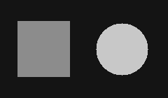
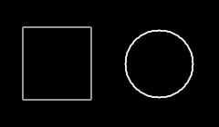

Como um computador encontra as bordas de uma imagem?
Quando olhamos para uma imagem, conseguimos perceber facilmente onde um objeto termina e outro começa. Mas como um computador consegue identificar essas fronteiras?
Nos posts anteriores, fui entendendo como uma imagem vira uma matriz de pixels e como podemos estimar novos valores ao ampliá-la. Agora, a ideia é olhar para os pixels que já temos: uma das formas de encontrar bordas é procurar mudanças significativas de intensidade entre posições próximas.
Uma borda no meio de seis pixels
Em uma imagem em tons de cinza de 8 bits, 0 representa preto e 255 representa branco. Imagine estes seis pixels em uma linha:
A passagem de 20 para 200 chama a atenção porque saímos de uma região escura para outra clara de uma vez. É uma possível borda. Já a passagem de 20 para 21 é tão pequena que, sozinha, provavelmente não indica uma borda relevante. O que interessa aqui é a diferença entre vizinhos, não apenas o brilho de um pixel isolado.
Em qual direção a intensidade muda?
Na disciplina, essa mudança aparece ligada às derivadas da imagem. Como temos pixels separados em uma grade, podemos aproximar a derivada comparando valores de uma pequena vizinhança. Ela ajuda a medir quanto a intensidade muda em determinada direção.
Essa foi a parte que mais me confundiu no começo: mudar na horizontal destaca uma borda vertical? Sim, porque atravessamos essa borda andando da esquerda para a direita. A direção da mudança de intensidade é perpendicular à orientação da borda.
Como o Sobel faz essa comparação
O operador Sobel usa duas matrizes pequenas, chamadas de kernels. Cada uma compara lados opostos de uma vizinhança de 3 × 3 pixels, dando mais peso à linha ou à coluna central:
-1 0 1
-2 0 2
-1 0 1-1 -2 -1
0 0 0
1 2 1Podemos imaginar cada matriz deslizando pela imagem. Em cada posição, multiplicamos os valores dos pixels pelos pesos correspondentes e somamos. Em uma região uniforme, as contribuições positivas e negativas se cancelam. Quando um lado é mais claro que o outro, aparece uma resposta.
Quanto maior a resposta em módulo, mais forte é a mudança de intensidade e maior é a evidência de uma borda. O sinal indica o sentido da variação: trocar claro por escuro pode inverter o sinal sem deixar de ser uma borda.
G = √(Gx² + Gy²)Essa magnitude combina as duas respostas. Assim, conseguimos destacar também contornos inclinados, que podem produzir variações nos dois eixos.
Da imagem aos contornos
Para visualizar o resultado, montei uma imagem com um retângulo e um círculo claros sobre um fundo escuro. As imagens abaixo mostram a entrada e o resultado do cálculo de Sobel sobre ela.


O interior das formas praticamente desaparece: ali os pixels têm a mesma intensidade. Já os contornos aparecem porque é onde encontramos a transição entre o fundo e as formas. O círculo fica mais destacado porque seu contraste com o fundo é maior.
Para exibir o resultado, a maior magnitude foi mapeada para branco e as demais foram escaladas proporcionalmente. Não foi aplicado um limiar: os tons claros mostram a força da resposta, não uma decisão binária de “borda ou não borda”. Nas margens da imagem, o cálculo repete o pixel mais próximo.
Separando Gx e Gy
Em duas imagens ainda mais simples, a diferença entre as direções fica bem visível:
Atravessando da esquerda para a direita →
Gx forte · Gy zeroNo trecho reto, a intensidade muda em X, mas não em Y.
Atravessando de cima para baixo ↓
Gy forte · Gx zeroNo trecho reto, a intensidade muda em Y, mas não em X.
Esses são exemplos ideais, com regiões uniformes. Em uma fotografia, curvas, texturas e inclinações podem fazer os dois kernels responderem na mesma vizinhança.
Nem toda mudança é um contorno de objeto
Um ponto de ruído também pode ser muito diferente dos pixels ao redor e acabar destacado como se fosse uma borda. Por isso, em alguns casos, vale suavizar a imagem antes da detecção. É um cuidado com equilíbrio: suavizar demais também pode apagar detalhes que queríamos encontrar.
Para que encontrar bordas?
Destacar contornos ajuda a identificar formas e analisar objetos. Também pode apoiar a segmentação, que procura separar regiões da imagem, e outras etapas de processamento de imagens e de sistemas de visão computacional.
Isso não quer dizer que todo sistema de reconhecimento de objetos ou toda câmera de celular use Sobel. O que ficou para mim é que detectar bordas é um conceito fundamental: conseguimos extrair informações sobre a estrutura da imagem observando como seus valores mudam.
Uma mudança no jeito de olhar
Antes de estudar esse assunto, eu pensava em uma borda apenas como algo visual. Depois de entender esses filtros, passei a enxergá-la também como uma mudança nos valores dos pixels. Achei interessante como uma operação matemática relativamente simples consegue extrair uma informação tão importante de uma imagem.
A borda que eu vejo como o limite de uma forma pode aparecer, para o computador, como uma diferença entre números vizinhos.
Referências
OpenCV — Sobel Derivatives. Documentação sobre as derivadas em X e Y e os kernels do operador.
Universidade de Edimburgo, HIPR2 — Sobel Edge Detector. Material didático sobre magnitude do gradiente, contornos e efeitos do ruído.